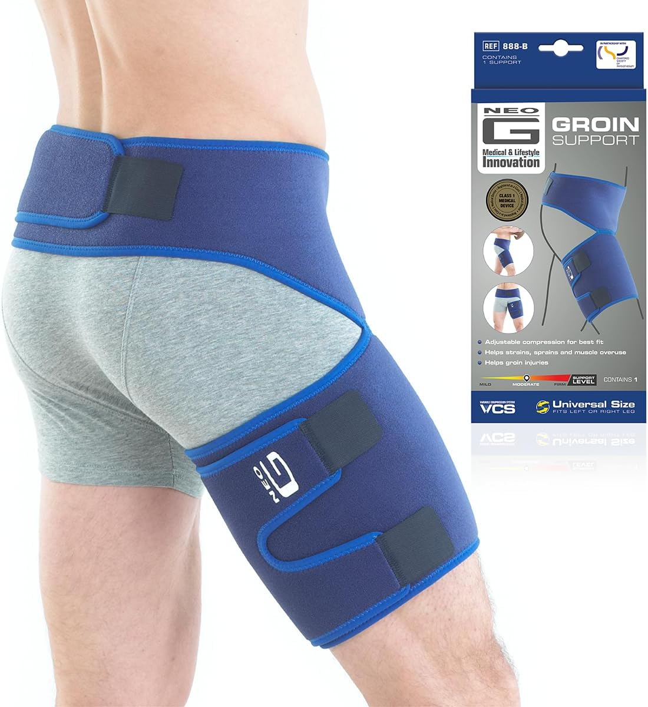

Orteză Compresivă pentru Șold și Coapsă, Unisex, Albastru
Orteză compresivă NEO G pentru șold, zona inghinală și coapsă, unisex, albastru, cu neopren flexibil și benzi reglabile.
Produsul are stoc declarat 0 buc. Prețul afișat de 0,00 Lei este o valoare de catalog, nu un preț de vânzare confirmat. Solicită disponibilitatea, prețul final și condițiile comerciale înainte de comandă.
DETALII PRODUS
Descriere
Orteza compresivă NEO G pentru șold, zona inghinală și coapsă este un accesoriu de susținere conceput pentru a oferi stabilitate și compresie reglabilă în regiunea superioară a membrului inferior. Datorită construcției ergonomice și materialului flexibil din neopren, produsul permite adaptarea la forma corpului, fiind potrivit pentru utilizarea în activități cotidiene și sportive, conform recomandărilor producătorului.
Designul anatomic al suportului reprezintă unul dintre principalele sale avantaje, deoarece combină susținerea zonei șoldului cu fixarea în jurul coapsei. Această configurație urmărește să ofere sprijin muscular și să limiteze mișcările inconfortabile, fără a imobiliza complet articulația.
Sistem de compresie ajustabilă
Orteza dispune de un mecanism de fixare cu benzi reglabile și închidere tip arici, care permite adaptarea nivelului de strângere în funcție de conformația utilizatorului.
Sistemul de ajustare este amplasat atât în regiunea șoldului, cât și în jurul coapsei, contribuind la menținerea stabilității produsului în timpul deplasării și al mișcărilor obișnuite.
Compresia poate fi ajustată individual, pentru obținerea unei fixări confortabile, fără exercitarea unei presiuni excesive.
Material din neopren pentru susținere și confort
Materialul din neopren oferă elasticitate și capacitate de adaptare la conturul corpului, fiind utilizat frecvent în realizarea accesoriilor de susținere musculară și articulară.
Proprietățile termoizolante ale neoprenului contribuie la păstrarea căldurii locale în zona acoperită. Această caracteristică poate fi utilă în contextul activităților fizice, în funcție de necesitățile și toleranța individuală.
Marginile textile finisate sunt concepute pentru a limita frecarea și pentru a îmbunătăți confortul în timpul purtării.
Susținere pentru activități fizice și mobilitate
Orteza este destinată susținerii zonei șoldului, a musculaturii inghinale și a coapsei, putând fi utilizată în contexte care necesită compresie localizată.
Designul permite integrarea produsului în activități precum mersul, exercițiile fizice și anumite activități sportive, în măsura în care utilizarea acestuia este adecvată.
Produsul nu înlocuiește evaluarea medicală sau tratamentul de specialitate în cazul leziunilor musculare și articulare.
Model universal pentru piciorul stâng sau drept
Construcția versatilă permite utilizarea suportului atât pe piciorul stâng, cât și pe cel drept, eliminând necesitatea achiziționării unor modele separate.
Sistemul reglabil facilitează adaptarea la diferite conformații corporale, iar designul unisex permite utilizarea de către femei și bărbați.
Culoarea albastră, completată de margini contrastante și benzi de fixare, oferă produsului un aspect sportiv și funcțional.
Caracteristici și avantaje principale
- Suport compresiv pentru șold și coapsă: conceput pentru susținerea zonei superioare a membrului inferior.
- Susținere inghinală: construcție adaptată regiunii musculare dintre șold și coapsă.
- Material din neopren: flexibil, cu proprietăți termoizolante.
- Compresie reglabilă: permite ajustarea presiunii aplicate asupra zonei susținute.
- Sistem de închidere tip arici: facilitează fixarea și îndepărtarea produsului.
- Benzi multiple de ajustare: permit adaptarea individuală a suportului.
- Model unisex: destinat utilizării de către femei și bărbați.
- Mărime universală: construcție reglabilă pentru diferite conformații corporale, în limitele indicate de producător.
- Compatibilitate stânga/dreapta: poate fi poziționat pe oricare dintre cele două picioare.
- Susținere musculară: conceput pentru aplicarea compresiei în regiunea coapsei.
- Design ergonomic: urmărește conturul natural al șoldului și al membrului inferior.
- Material flexibil: permite realizarea mișcărilor compatibile cu utilizarea produsului.
- Conservarea căldurii locale: neoprenul contribuie la menținerea temperaturii în zona acoperită.
- Margini textile finisate: concepute pentru confort și rezistență la utilizare.
- Utilizare sportivă: poate fi integrat în activități fizice, conform recomandărilor.
- Accesoriu reutilizabil: poate fi întreținut conform instrucțiunilor producătorului.
- Culoare albastră: design sportiv cu elemente de fixare contrastante.
- Brand NEO G: produs din gama Groin Support, referință 888-B.
- Pachet individual: conține un suport compresiv.
- Fără alimentare electrică: funcționează prin proprietățile materialului și sistemul mecanic de fixare.
Comandă și informații
Site-ul funcționează ca un catalog B2B. Nu există plată online sau coș de cumpărături. Momentan produsul nu este disponibil în stoc.
Discută pe WhatsApp →DIN ACEEAȘI CATEGORIE